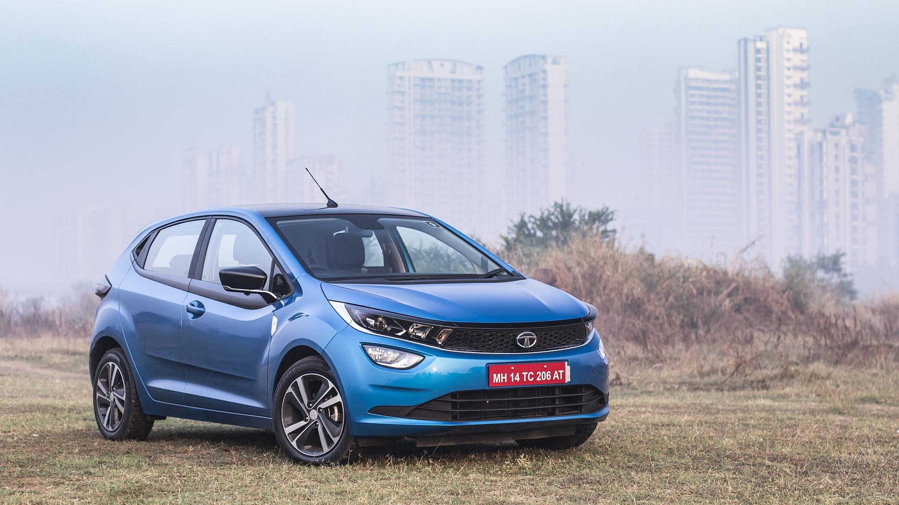

Tata Altroz
Tata Altroz is a 5 seater Hatchback available in a price range of ₹ 7.19 - 11.77 Lakh. It is available in 31 variants, 1199 to 1497 cc engine options and 2 transmission options : Manual and Automatic (DCT). Other key specifications of the Altroz include a Ground Clearance of 165 mm and Bootspace of 345 litres. The Altroz is available in 6 colours. The mileage of Altroz ranges from 18.37 kmpl to 23.03 kmpl.

₹ 7.19 Lakh
Tata Altroz Key Specifications
| ?? |
!! |
| Price |
₹ 7.19 Lakh onwards |
| Mileage |
18.37 to 23.03 kmpl |
| Engine |
1199 to 1497 cc |
| Transmission |
Manual & Automatic (DCT) |
| Fuel Type |
Petrol & Diesel |
| Seating Capacity |
5 Seater |
Tata Altroz Mileage
| Fuel Type |
Transmission |
ARAI Mileage |
| Diesel(1497 cc) |
Manual |
23.03 kmpl |
| Petrol(1199 cc) |
Automatic (DCT) |
18.47 kmpl |
| Petrol(1199 cc) |
Manual |
18.37 kmpl |